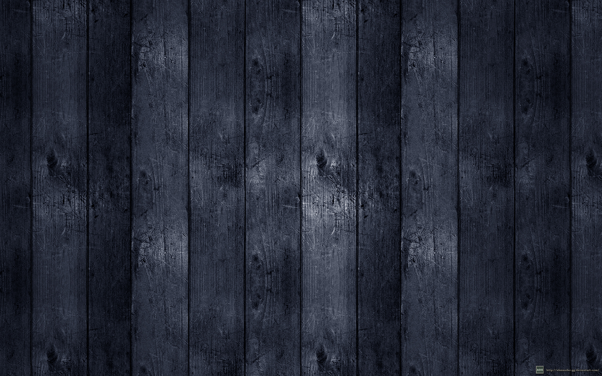

Noel Camacho Cárdenas

Logros
- Crear aplicacion web progresiva en hacking JS
- Primer lugar de proyecto integrador 5 semestre
- Aun esta vivo en la carrera ._.//
- Estar vivo .-.
Hobbies

- Jugar y ver futbol
- Ver Series
- Ver Peliculas
- Programación
- Ir al cine
- Jugar tenis
Datos interesantes

- No me gusta ir a la playa.
- Me encanta ir al cine.
- Suelo ser muy competitivo.
- Me gusta probar nuevas comidas.
- Amo dormir.
- Ya no vivo con mis padres,
ellos me siguen manteniendo :c
- Antes jugaba futbol pero me lastime
la rodilla xd Historia real.